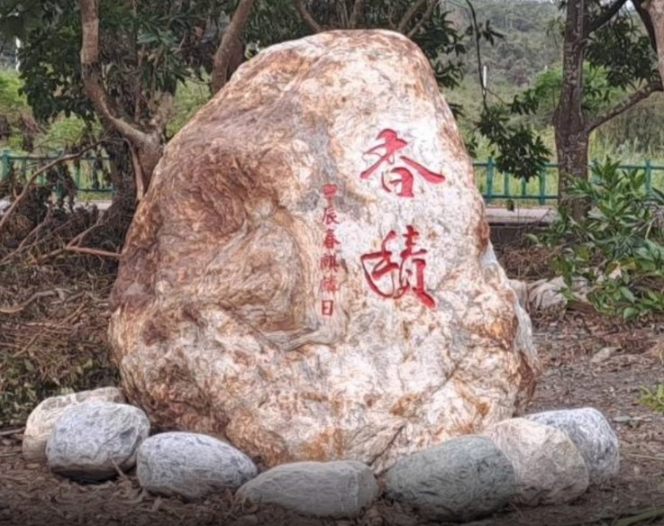

舞鶴為什麼叫有好？
舞鶴，位於花蓮瑞穗的一片台地，海拔約 300 公尺，俯瞰秀姑巒溪河谷。這裡的台語舊名「有好（ū-hó）」，意指萬事圓滿、心想事成。祥鶴回首銜羽的靈動意象，加上台語諧音祝福，讓這片土地成為天然的好運磁場。每當晨霧未散，站在台地邊緣俯瞰雲海，你會明白為什麼舞鶴的人說：這裡的空氣本身就是一種祝福。
點擊翻牌，領取今日好運
讀取中...
載入中，請稍候...
舞鶴，位於花蓮瑞穗的一片台地，海拔約 300 公尺，俯瞰秀姑巒溪河谷。這裡的台語舊名「有好（ū-hó）」，意指萬事圓滿、心想事成。祥鶴回首銜羽的靈動意象，加上台語諧音祝福，讓這片土地成為天然的好運磁場。每當晨霧未散，站在台地邊緣俯瞰雲海，你會明白為什麼舞鶴的人說：這裡的空氣本身就是一種祝福。
Kalala，是阿美族語「藤編籃子」的意思，也是舞鶴台地的古老族名。阿美族人用月桃葉與黃藤編織的 Kalala，裝得下全家人的溫飽，也裝得下部落共同耕作的記憶。今日舞鶴以蜜香紅茶聞名，那甜而帶花香的滋味，正是小綠葉蟬叮咬茶葉後的奇妙轉化——大自然與人的共生智慧，釀造出最獨特的風土滋味。
矗立在舞鶴台地上的掃叭石柱，是台灣現存最高的史前石柱遺跡，距今約 3000 年。兩根巨石並立，高達 5 公尺，無人知曉當年先民如何豎起這沉默的巨人。當地流傳著古老的傳說：部落大頭目迎娶時，石柱見證了愛情的莊嚴誓約；暴雨來臨前，石柱頂端會凝聚白霧，是山神在預告天氣。時間沖刷了一切，只有石柱還站在原地，守護這片土地。
1878 年，加禮宛事件在這片土地留下了深重的歷史傷痕。撒奇萊雅族與噶瑪蘭族在烈火與硝煙中流離失所，族人被迫隱姓埋名，將自己的文化深埋心底超過一個世紀。然而，土地記得。2007 年，撒奇萊雅族正式正名，祖靈祭的火焰重新點燃。那些曾經不能說出口的歌謠，如今在舞鶴的山風裡迴盪。傷痕化為韌性，烈火化為新生，這是舞鶴最深沉也最動人的底蘊。
香積園，是舞鶴台地上一處靜謐的心靈道場。東邊的平靜廣場，一棵百年茄苳樹靜靜守護著來往的旅人；西邊的古伊之泉親水生態池，清澈的山泉水終年不斷，倒映著天光雲影。園內供奉的心咒，據說只要靜心聆聽，便能感受到一種說不清楚的清淨磁場。無論你信仰什麼，香積園給你的，是一段讓內心歸零的寂靜時光。
